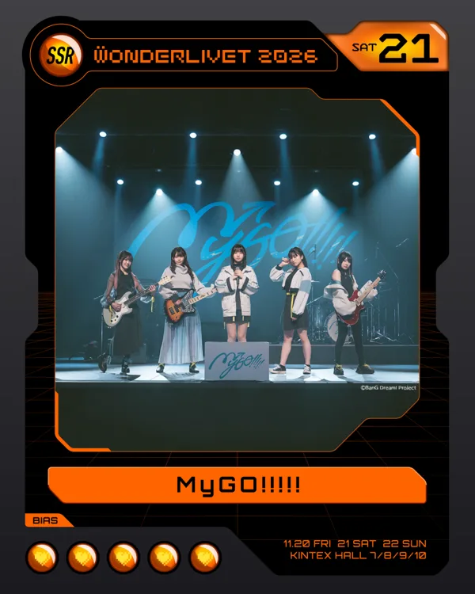
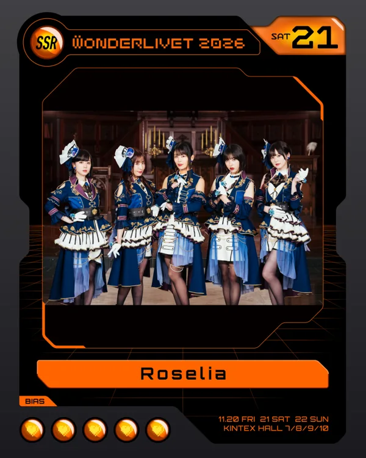

콜 가이드
원더리벳 전에 콜(응원) 타이밍을 익혀 두세요. 방갤 유저들이 만든 자료입니다.

MyGO!!!!! 콜표 v1.0
방갤 · 2026-10-05 · 11곡 · 한글 발음 가사 위에 콜을 색으로 표시
- 迷星叫
- 壱雫空
- 影色舞
- 聿日箋秋
- 往欄印
- 焚音打
- 砂寸奏
- 歩拾道
- 証命讃歌
- 音一会
- 孤壊牢
주황 = 콜노란 형광펜 = 박수 구간(하이! x8) = 외침과 횟수

Roselia 콜 연습 (예상곡 13곡)
곡을 누르면 콜표 가사(원문·발음·번역)가 열립니다. ▶ 표시 곡은 콜 가이드 영상도 있습니다. 곡 선정 근거는 출연진 페이지.
빨강 = 콜갈색 띠 = 하이콜 등 구간 표시
첫 내한(2025.12.24) 당시 자료
콜·가사는 곡에 붙은 것이라 지금도 참고할 수 있습니다. 일정·장소·셋리스트 예상은 이번 공연과 다릅니다.
- 로젤리아 가사 & 콜표 (방갤) · 위 콜표의 출처
- 로젤리아 라이브 콜 영상 플레이리스트 (YouTube · 팬 채널 Roselive)
- 내한 라이브 및 방파티 대비용 Roselia 플레이리스트 공유 (방갤)
- 로젤리아 아시아투어 서울 공연 종합 가이드 (방갤) · 작년 공연 기준 안내입니다
- Roselia 내한 대비 곡 리스트 · 전체 56곡 콜표 (첫 내한 대비판)
가사만 보고 싶다면 곡 목록에서 곡명을 누르세요.